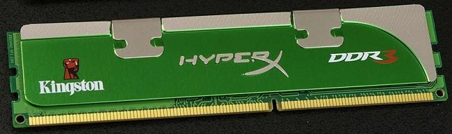

Zadanie
Mikołaj Dąbrowa
1)Jednostka obliczeń zmiennoprzecinkowych to
ALU
FPU
RPU
2) Aby podłączyć projektor multimedialny do komputera,
nie należy
używać złącza
D-SUB
HDMI
SATA
3) CSS to:
Style kaskadowe
Style lokalne
Język programowania
4) System binarny to inaczej:
Wybierz
Ósemkowy
Dziesiętny
Dwójkowy
5)Urządzenia wyjścia to:
Głośniki
Słuchawki
Skaner
Mikrofon
6) Kości pamięci DDR3 SDRAM zasilane są napięciem
1,5V
1,8V
3V

7) Co się stanie gdy po włączeniu komputera odłączymy go od zasilania
Uruchomi się ponownie
Wyłączy się
Zatrzyma się na ekranie ładowania
8) Zdjęcie przedstawia płytę główną komputera. Strzałką oznaczono
Gniazdo zasilania do płyty ATX
Połączenie do dysku IDE
Gniazdo zasilania do płyty AT
9) Co się stanie gdy podłączymy komputer do zasilania?
Uruchomi się
Nic się nie stanie
Uruchomi sie i zatrzyma na ekranie ładowania
10) Który dysk jest szybszy?
HDD
SDD
SSD